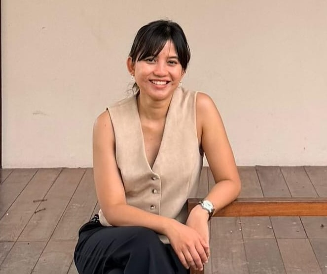

Miryana Vinka Dayanti
PhD Candidate · Development Economics
On the job market 2026–2027.
I am a PhD candidate in the Department of Agricultural, Environmental, and Development Economics at Ohio State University.
My research focuses on development economics and economic demography, with a particular emphasis on women and children. I hold an MS in Economics from the University of Illinois at Urbana-Champaign and a BA in Economics from Universitas Indonesia.
In my free time, I enjoy doing Lagree, going for walks, and watching movies.